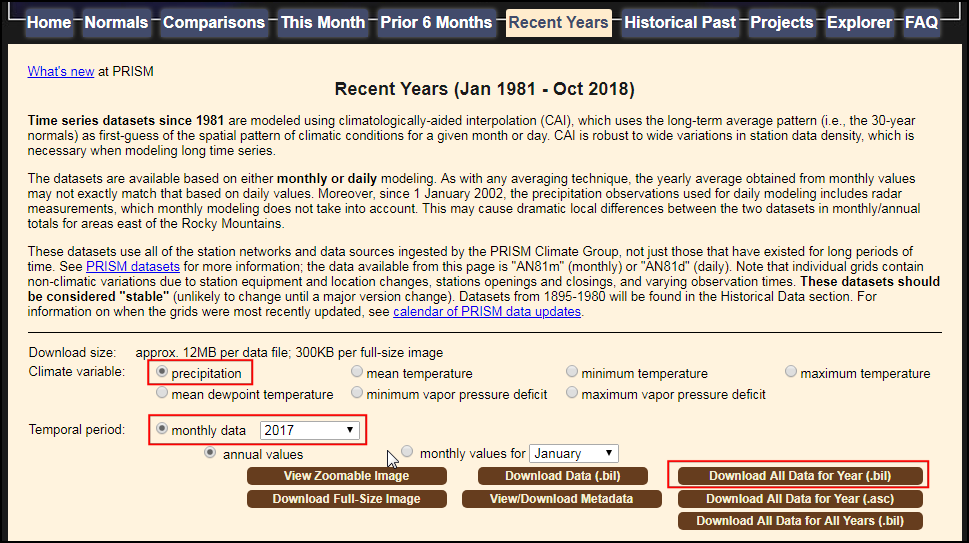
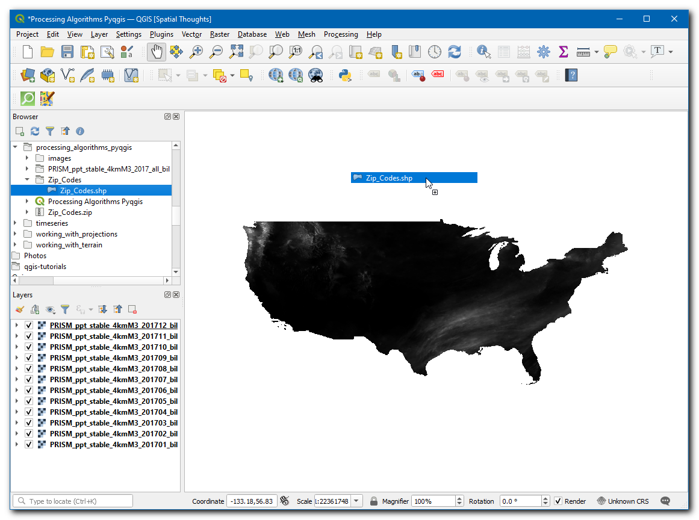
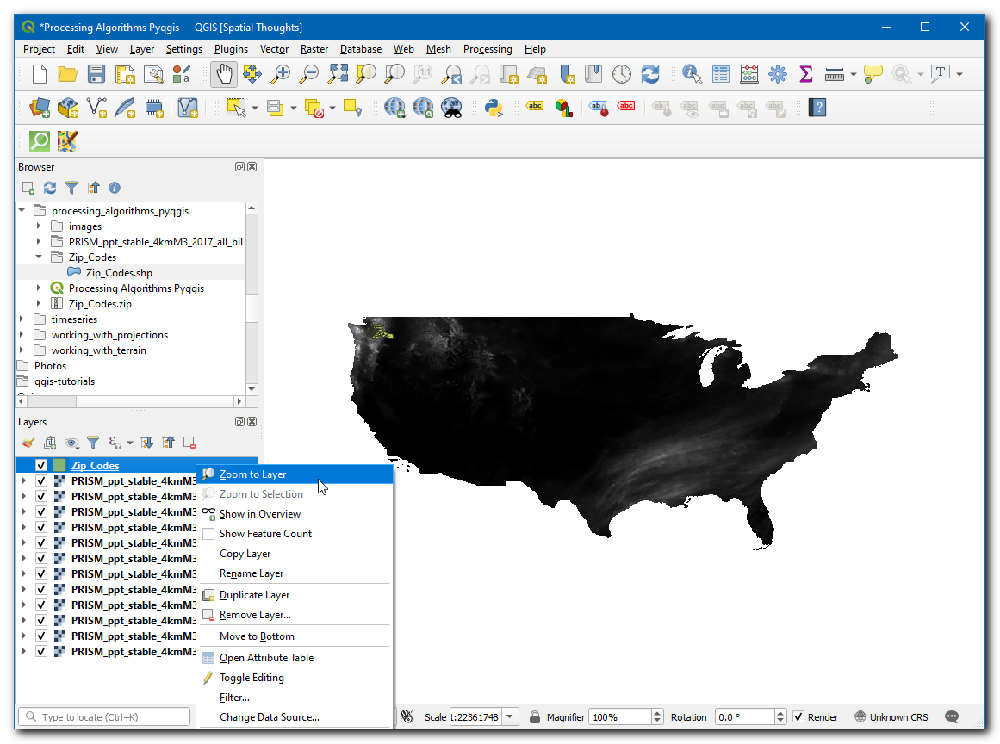
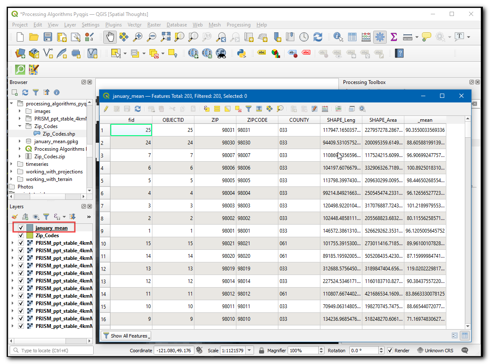
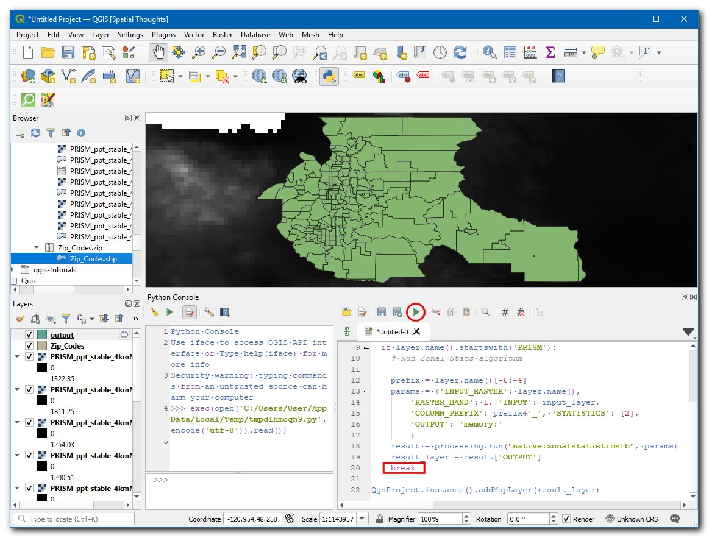
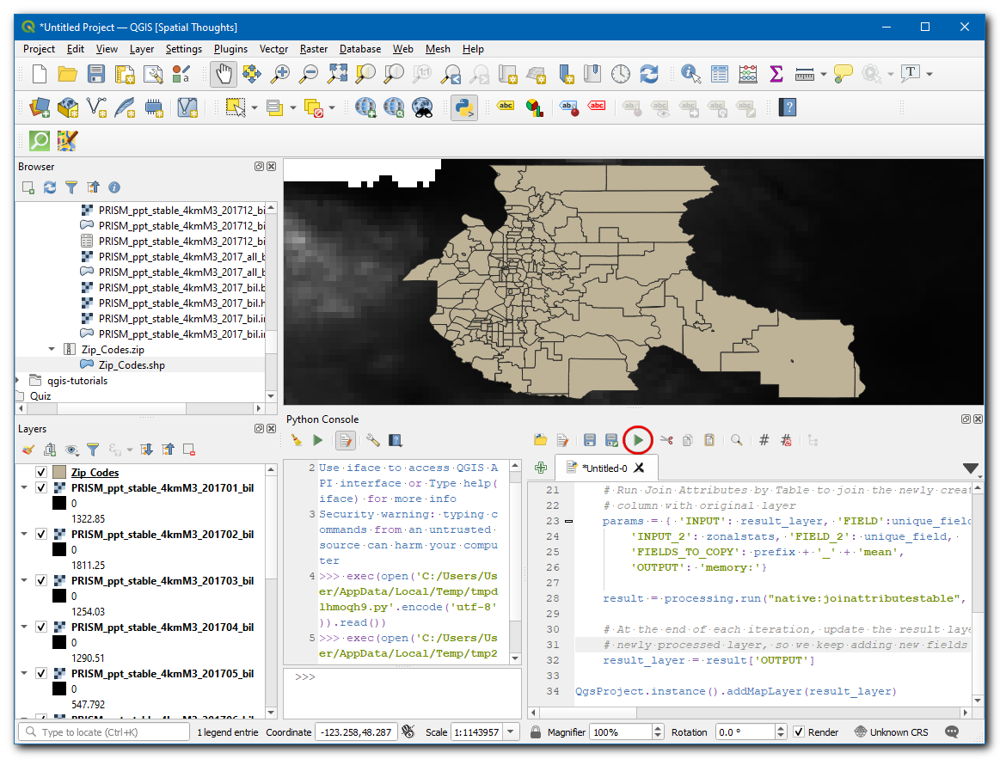
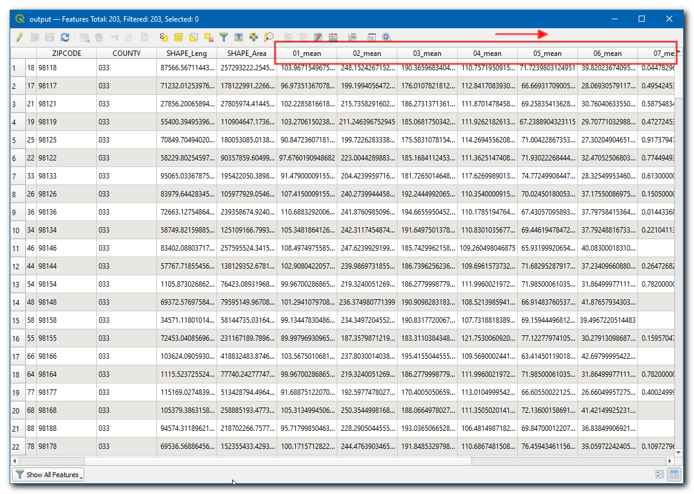

Ujaval Gandhi
Ujaval GandhiAlgoritmes van Processing uitvoeren via Python (QGIS3)¶
De Toolbox van Processing in QGIS bevat een nog steeds groeiende collectie van gereedschappen voor geoprocessing. De Toolbox verschaft een gemakkelijke interface voor het batch-verwerking om een algoritme uit te voeren op een groot aantal invoeren. Bekijk Massa verwerken met behulp van Framework Processing (QGIS 3). Maar er zijn gevallen waarin u een beetje aangepaste logica in uw batch-verwerking moet inbouwen. Omdat alle algoritmes van Processing programmatisch kunnen worden uitgevoerd via de Python API, kunt u ze ook uitvoeren via de Python Console. Deze handleiding laat u zien hoe een algoritme van Processing uit te voeren via de Python Console om een aangepaste taak voor geoprocessing uit te voeren met slechts enkele regels code. Bekijk de handleiding Beginnen met programmeren in Python (QGIS3) om bekend te geraken met de basisbeginselen van de omgeving voor Python Scripting in QGIS.
Overzicht van de taak¶
We zullen 12 gerasterde rasterlagen gebruiken die de neerslag voor elke maand van het jaar weergeven en de gemiddelde maandelijkse neerslag berekenen voor de postcodes in de omgeving van Seattle.
Andere vaardigheden die u zult leren¶
Verkrijg toegang tot alle lagen (raster en vector) vanuit de console van Python en druk hun namen af.
Verschillende lagen samenvoegen tot één bestand met script van Python.
De gegevens ophalen¶
De PRISM Climate Group verzamelt klimatologische gegevens en verschaft historische en recente klimaatgegevens voor de gehele VS. Ga naar de gegevenspagina Recent Years en download de maandelijkse neerslaggegevens voor het jaar 2017 in de indeling BIL.
City of Seattle Open Data portal verschaft gratis en open gegevens voor de stad. Zoek naar en download de gegevens Zip Codes in de indeling shapefile.
Voor het gemak kunt u direct een kopie van beide gegevenssets downloaden vanaf de links hieronder:
PRISM_ppt_stable_4kmM3_2017_all_bil.zip
Gegevensbron: [PRISM] [CITYOFSEATTLE]
Procedure¶
Zoek naar de map
PRISM_ppt_stable_4kmM3_2017_all_bilin de QGIS Browser en vergroot die. De map bevat 12 individuele lagen voor elke maand. Houd de Ctrl-toets ingedrukt en selecteer de bestanden.bilvoor alle 12 maanden. Eenmaal geselecteerd, sleep ze naar het kaartvenster.

Notitie
De gegevens worden geleverd in de indeling BIL. Elke laag wordt weergegeven met een set bestanden, bestand .bil dat de feitelijke gegevens bevat, een bestand .hdr dat de structuur van de gegevens beschrijft en een bestand .prj dat de informatie voor de projectie bevat. QGIS kan het bestand .bil laden vooropgesteld dat de andere bestanden bestaan in dezelfde map.
Een dialoogvenster Transformatie voor PRISM_ppt_stable_4kmM3_2017_all_bil selecteren zal verschijnen, laat de selectie op de standaardwaarden en klik op OK.

Zoek vervolgens naar de map
Zip_Codesen vergroot die. Sleep het bestandZip_Codes.shpnaar het kaartvenster.

Klik met rechts op de laag
Zip_Codesen selecteer Op kaartlaag inzoomen. U zult de polygonen van de postcodes voor de stad en omliggende gebieden zien.

Ga naar .

Het algoritme om monsters te nemen uit een rasterlaag met behulp van vectorpolygonen staat bekend als
Gebiedsstatistieken. Zoek naar het algoritme in de Toolbox van Processing. Selecteer het algoritme en ga er met uw muis overheen. U zult een Helptip zien met de tekst Algorithm ID: ‘native:zonalstatisticsfb’. Onthoud deze ID, die nodig is om dit algoritme aan te roepen via de API van Python. Dubbelklik op het algoritmeGebiedsstatistiekenom het te starten.

We zullen een handmatige test van het algoritme uitvoeren voor één enkele laag. Dit is een nuttige manier om te controleren of het algoritme zich gedraagt zoals verwacht en ook een gemakkelijke manier om uit te zoeken hoe de relevante parameters aan het algoritme door te geven wanneer het gebruikt wordt via Python. Selecteer, in het dialoogvenster Gebiedsstatistieken,
Zip_Codesals de Invoerlaag,PRISM_ppt_stable_4kmM3_201701_bilals de Rasterlaag en laat de andere parameters op hun standaardwaarden. Klik op de knop … naast Statistieken om te berekenen en selecteer alleenGemiddelde, klik vervolgens op de knop … naast Gebiedsstatistieken en sla de laag op alsjanuary_mean.gpkg. Klik op Uitvoeren.

Schakel, als het algoritme is voltooid, naar de tab Log. Maak een notitie van de Parameters invoer die werden doorgegeven aan het algoritme. Klik op Close.

Nu zal een nieuwe laag
january_meanworden toegevoegd aan het kaartvenster. Laten we de resultaten controleren, klik met rechts op de laag en selecteer Attributentabel openen. Dit bepaalde algoritme past de laag voor de invoerzones ter plekke aan en voegt een nieuwe kolom toe voor elke statistiek die werd geselecteerd. Een nieuwe kolom, genaamd_mean, is toegevoegd aan de tabel, omdat we alleen de waardeGemiddeldehadden geselecteerd. De_is het standaard voorvoegsel. Wanneer we het algoritme uitvoeren voor lagen van alle maanden is het nuttig om een aangepast voorvoegsel met het nummer van de maand te specificeren, zodat we eenvoudig de gemiddelde waarden kunnen identificeren voor elke maand (d.i. 01_mean, 02_mean etc.). Specificeren van dit aangepaste voorvoegsel is niet mogelijk in de interface Batch Processing van QGIS en als we deze opdracht zouden uitvoeren met die interface, zouden we het aangepaste voorvoegsel handmatig moeten toevoegen voor elke laag. Als u werkt met een groot aantal lagen kan dit behoorlijk omslachtig zijn. Vandaar dat we deze aangepaste logica kunnen toevoegen met de API van Python en het algoritme in een for-loop voor elke laag uitvoeren.

Ga, terug in het hoofdvenster van QGIS, naar .

Klik op de knop Bewerker weergeven. Dit zal de bewerker voor Python openen waar veel code voor Python kan worden geschreven en uitgevoerd met één enkele klik op een knop.

We moeten toegang hebben tot alle namen van de lagen om het algoritme van Processing uit te voeren via Python. Voer de volgende code in de bewerker in en druk op de knop Opdracht uitvoeren. U zult de namen van alle lagen zien afgedrukt in de console.
root = QgsProject.instance().layerTreeRoot() for layer in root.children(): print(layer.name())
Wel, laten we nu het
Gemiddeldeberekenen voor één maand en een uitvoerlaag maken. In de code hieronder wordt break gebruikt om de loop te beëindigen nadat die de eerste keer is uitgevoerd, op deze manier kunnen we het gemiddelde voor de maand Januari berekenen.
import re root = QgsProject.instance().layerTreeRoot() input_layer = 'Zip_Codes' unique_field = 'OBJECTID' # Iterate through all raster layers for layer in root.children(): if layer.name().startswith('PRISM'): # Run Zonal Stats algorithm # Extract the YYYYMM part of the layer name pattern = r'_(\d+)_' matches = re.findall(pattern, layer.name()) # Use the month as the prefix prefix = matches[0][-2:] params = {'INPUT_RASTER': layer.name(), 'RASTER_BAND': 1, 'INPUT': input_layer, 'COLUMN_PREFIX': prefix+'_', 'STATISTICS': [2], 'OUTPUT': 'memory:' } result = processing.run("native:zonalstatisticsfb", params) result_layer = result['OUTPUT'] QgsProject.instance().addMapLayer(result_layer) # Breaking out of loop to demonstrate the # zonalstatistics algorithm. break
Notitie
U kunt ook een QGIS algoritme voor Processing via Python uitvoeren met de functie processing.runAndLoadResults() in plaats van met processing.run() zoals hierboven weergegeven - wat het resultaat direct in het kaartvenster van QGIS zal laden.
Een nieuwe laag
outputzal wordne toegevoegd aan het kaartvenster, klik met rechts op de laag en selecteer Attributentabel openen. 01_mean geeft het gemiddelde voor één mand weer, net zoals het hierboven vermelde algoritme 12 nieuwe lagen zal maken als het wordt uitgevoerd zonder de break.

Now lets add code to merge all the months mean, and create an single output layer from it. We update the previous code, to iteratively run the Zonal Statistics algorithm. We define a new variable
result_layerwhich is set toZip_Codesin the beginning but gets updated with the output layer from each iteration. This will allow us to use the result of each iteration and add new columns to it. Enter the following code to iterate over all raster layers and create an single layer containing all months mean.
import re root = QgsProject.instance().layerTreeRoot() input_layer = 'Zip_Codes' result_layer = input_layer unique_field = 'OBJECTID' # Iterate through all raster layers for layer in root.children(): if layer.name().startswith('PRISM'): # Run Zonal Stats algorithm # Extract the YYYYMM part of the layer name pattern = r'_(\d+)_' matches = re.findall(pattern, layer.name()) # Use the month as the prefix prefix = matches[0][-2:] params = {'INPUT_RASTER': layer.name(), 'RASTER_BAND': 1, 'INPUT': result_layer, 'COLUMN_PREFIX': prefix+'_', 'STATISTICS': [2], 'OUTPUT': 'memory:' } result = processing.run("native:zonalstatisticsfb", params) # Update the result_layer variable # The result will be used as input for the next iteration result_layer = result['OUTPUT'] QgsProject.instance().addMapLayer(result_layer)
Als het verwerken eenmaal is voltooid zal een nieuwe laag
outputworden toegevoegd aan het kaartvenster. Klik met rechts op de laag en klik op Attributentabel openen.

U zult in de tabel 12 nieuw toegevoegde kolommen zien met aangepaste voorvoegsels en waarden voor de gemiddelde neerslag, uitgenomen uit de rasterlagen.

If you want to give feedback or share your experience with this tutorial, please comment below. (requires GitHub account)